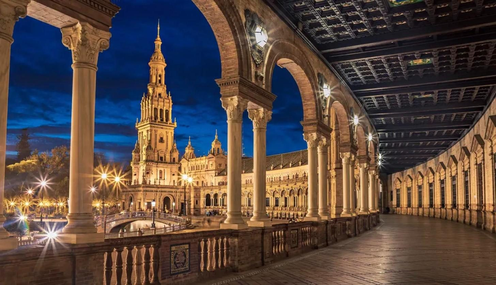
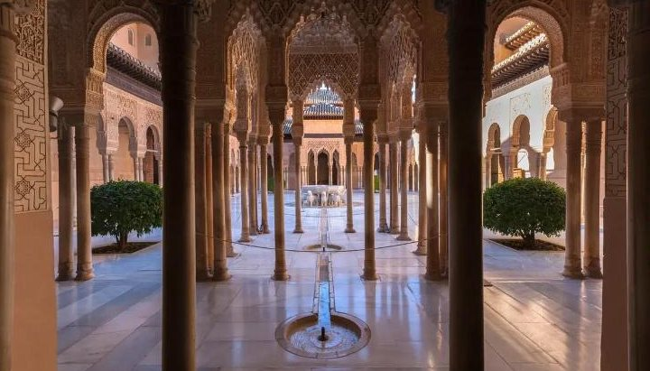
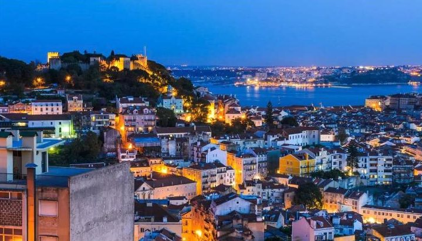
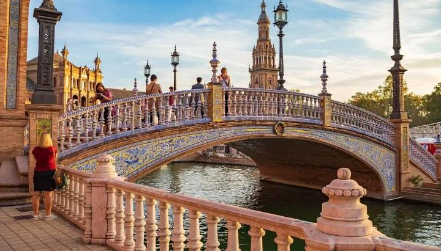
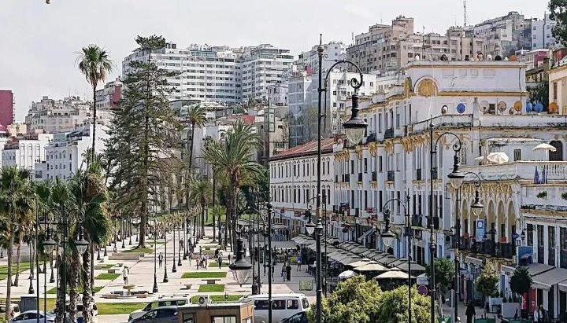

dzień1
Przylot do Malagi
📍 Poznań → Malaga
Lot do Malagi na Costa del Sol. Transfer do hotelu, obiadokolacja i nocleg.

Samolotem do Malagi: Alhambra, Fatima, Lizbona, Sewilla i Gibraltar
Kolejność zwiedzania może się nieco zmienić — o szczegółach decyduje pilot na miejscu.
📍 Poznań → Malaga
Lot do Malagi na Costa del Sol. Transfer do hotelu, obiadokolacja i nocleg.

📍 Granada
Zwiedzanie Granady i Alhambry — wspaniałego pałacu dawnych władców arabskich, najsłynniejszego zabytku Andaluzji. Hiszpanie mówią, że kto nie widział Granady, nie widział nic.

📍 Kordoba → pogranicze z Portugalią
Kordoba i jej ogromny dawny meczet, w którego środku zbudowano chrześcijańską katedrę. Stare miasto jest na liście UNESCO. Wieczorem przejazd do hotelu przy granicy z Portugalią.
📍 Fatima · Cabo da Roca
Sanktuarium w Fatimie: Bazylika Matki Boskiej Różańcowej i nowoczesny Kościół Trójcy Przenajświętszej po drugiej stronie placu. Potem przylądek Cabo da Roca — najdalej na zachód wysunięty punkt Europy.

📍 Lizbona
Stolica Portugalii, jedno z najstarszych miast Europy. Zamek św. Jerzego, klasztor Hieronimitów, Wieża Belém i katedra.

📍 Sewilla → okolice Algeciras
Miasto flamenco i słońca. Złota Wieża nad rzeką, gotycka katedra i jej dzwonnica Giralda. Wieczorem przejazd na nocleg w okolice Algeciras, na samym południu Hiszpanii.

📍 Gibraltar
Czas wolny na Gibraltarze — słynnej skale u wejścia do Morza Śródziemnego.

📍 Tarifa · Tanger (Maroko)
Przejazd do Tarify, najdalej na południe położonego miasta Europy. Kto nie płynie do Maroka, ma czas wolny na plaży w Tarifie albo na Gibraltarze (wycieczka busem po skale ok. 50 €).
📍 Malaga → Poznań
Śniadanie i przejazd na lotnisko w Maladze. Lot do Polski.
Wylot z Poznania. Cena jest za jedną osobę, gdy w pokoju są 2 osoby (urlop.pl podaje cenę za dwie: 11 118 zł).
| Cena wycieczki (najtańszy termin) | 5 559 zł |
| Obowiązkowe ubezpieczenie (leczenie i wypadki) | 200 zł |
| Fundusze gwarancyjne (TFG i TFP) | 40 zł |
| Obowiązkowa opłata w autokarze: bilety, przewodnicy, słuchawki, taksy | 200 € ≈ 850 zł |
Euro przeliczone orientacyjnie po ok. 4,25 zł. Bez wycieczki do Maroka (150 €) i bez dojazdu do Poznania. Dla 2 osób: ok. 13 300 zł.
Wycieczkę organizuje biuro Funclub. Ceny sprawdziłem w porównywarce urlop.pl, która ją sprzedaje — infolinia urlop.pl:
22 451 00 00
📞 Zadzwoń Zobacz ofertę na urlop.pl ↗